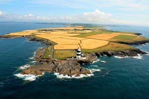
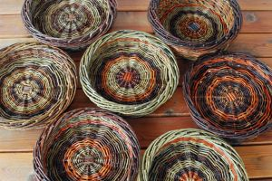

Welcome to Hook Peninsula

A perfect piece of Ireland . . . The Pinnacle point in Ireland’s Ancient East, discover the natural beauty and tranquility of the unspoiled Hook Peninsula. Stretching out from the scenic Southeast corner of Ireland, nieghbouring Waterford & Kilkenny, the Hook Peninsula is famous for its breath-taking vistas, magnificent natural landscapes, national heritage sites, beautiful gardens, pure sands and calm seas – this is the untouched ancient Ireland you’ve been longing to visit. Try your hand at some adventure with kite surfing, kayaking, coast steering and surfing all on offer. Top off an adrenaline fueled day with a fright filled tour of Ireland’s most haunted house or wind down with a stroll on a beautiful woodland walking trail. When you have worked up an appetite, sample one of the many seafood pubs and restaurants. From Michelin dining to award winning bistros, there is something for all tastes and pockets.
Upcoming Events
Valentine’s at Hook Lighthouse
- When: February 14 - February 17
- Where: Hook Lighthouse, Hook Head Sitting at the tip of breathtaking Hook Head in County Wexford the world’s oldest intact working lighthouse is offering couples the chance for seaside romance this Valentine’s Day with a tour for €10, a family tour ticket is also on offer for the same fee from Thursday, February 14th until Sunday, February 17th. 
Willow Basketry at the Heritage Park
- When: February 23 @ 10:00 AM - 4:30 PM
- Cost: €80
- Where: Irish National Heritage Park, Ferrycarrig Wexford
This class is aimed at both complete newcomers to the craft and also those who have a bit of experience and would like to improve on their skills. You can expect to make a small basket in the day. We will also cover the growing, harvesting, storing and preparation of the willows for working. This class is being hosted by The National Heritage Park, Wexford and bookings should be made through their web site.
Things to see and Experience
Hook Lighthouse
The award-winning Hook Lighthouse Visitor Centre offers experiential guided tours of the Medieval Hook Lighthouse Tower. Purpose built 800 years ago, Hook Lighthouse is the oldest intact operational Lighthouse in the World. Local Tour guides renowned for their friendly, knowledgeable and entertaining style, make each tour experience unique. As you discover the secrets of this 800-year-old Tower you will also meet some of the important characters of this historic building, including the 5th century St. Dubhan, ‘The Greatest Knight’ the Norman Lord of Leinster, William Marshal and the Lighthouse keepers who lived and worked at Hook over the years. The tour culminates on the Lighthouse Balcony where visitors are greeted with spectacular views. The tour experience is suitable for all ages and groups.
Loftus Hall
Loftus Hall is located on the stunning Hook Peninsula in County Wexford, and it is fast becoming one of the South East's "Must See" attractions. Renowned as Ireland's Most Haunted House, a take a 45 minute interactive tour of the ground floor, where the guide will reveal the fascinating history, and infamous Legend of Loftus Hall.